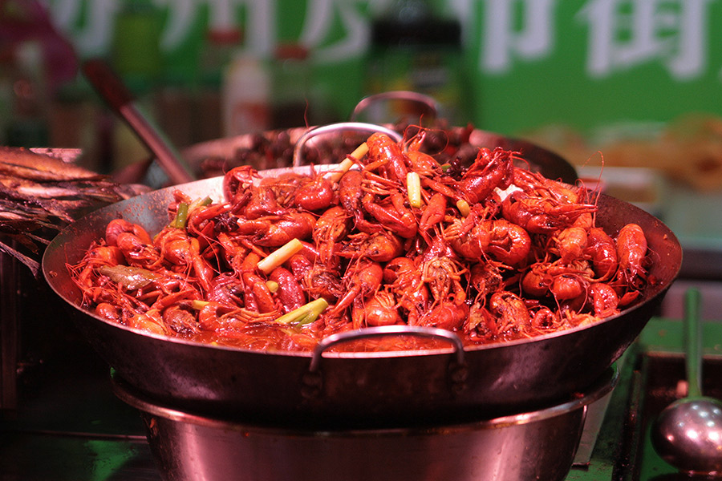
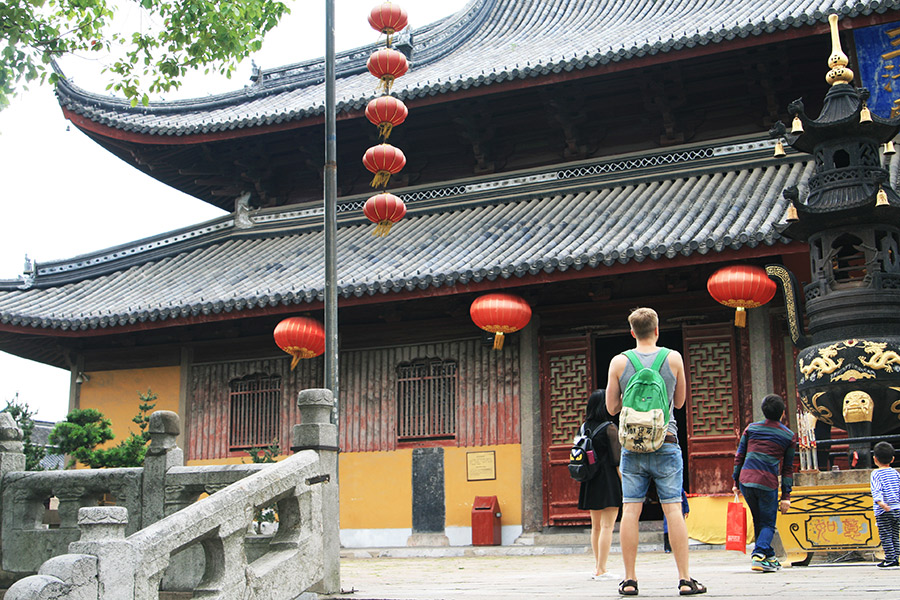
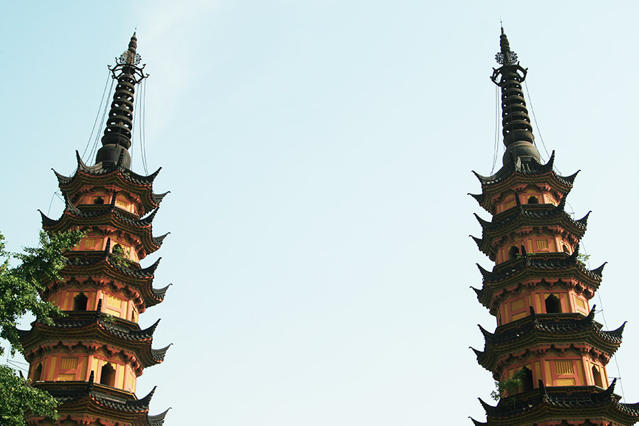

Сучжоу - город пагод и парков
02.09.2016

Сучжоу (Sūzhōu) насквозь пронизан речными каналами, соединенными древнейшими мостами, а вдоль каналов простираются узкие улочки — это действительно едва ли не самый первый город на воде. Именно поэтому Сучжоу еще называют восточной Венецией.
Немного истории
Город был основан в 514 году до нашей эры и сразу же приобрел статус развитого центра торговли, именно здесь начали изготавливать тончайший китайский шелк, который экспортировался практически во все страны мира. Даже сегодня город полон торговцами, на улицах царит оживленная суета, но вместе с тем жизнь течет неспешно и размеренно. Все строения здесь можно назвать монументальными, гости входят в город через огромные ворота Паньмэнь, которым уже более десятка веков, они находятся и на суши и на воде. А старинные парные пагоды видны далеко за пределами города.
Канал, который проходит через весь город длиной почти две тысячи километров, строился с 7 в., а над его возведением работало более пяти миллионов человек. Это важная водная транспортная артерия и по сей день, работу уникальной системы его шлюзов налаживает почти две тысячи человек. Вообще же, город условно разделен на две части: исторический центр, с его нетронутой первозданностью, и индустриально-торговый центр, значение которого в масштабах все мировой экономики трудно переоценить. Они являются олицетворением истории, богатых традиций, и современного ритма жизни.
Как добраться до Сучжоу
Своего аэропорта в городе нет, а ближайший находится в Шанхае — дорога от него займет чуть меньше часа на поезде. Здесь есть три вокзала, на которые прибывают поезда из Пекина, Шанхая и Нанкина. Автобусных станций тоже три — сюда, помимо Шанхая и Нанкина, можно приехать еще и из Ханчжоу.
Кроме того, если вам хочется подольше насладиться местными видами, из Шанхая до Сучжоу можно доплыть и на пароме.
Кухня и рестораны Сучжоу
Еда здесь разнообразна. Все блюда немного сладковатые, с обилием разнообразных соусов, которые гармонично дополняют основной вкус. Есть масса хороших ресторанов, наиболее популярным среди которых является Songhelou, где вам предложат запеченную утку или свинину под вишневым соусом.
Но все же с традиционной местной кухней намного интереснее знакомиться на городском рынке, который представляет собой целый туристический квартал с огромным количеством магазинов, сувенирных лавок, этнических ресторанчиков. Здесь можно попробовать пресловутого мохнатого краба под сладким соевым соусом.
А особенно славится кухня Сучжоу своими кондитерскими изделиями, они здесь готовятся на основе необычной рисовой муки. Коронное блюдо кондитеров — Лунный пирог. Запить его можно традиционным для этой местности сортом чая с поэтическим названием «весенний чай улитки».
Развлечения и достопримечательности Сучжоу
Прежде всего, Сучжоу славится своими парками. Они по праву считаются самыми роскошными и красивыми во всей стране, а их история началась еще IV веке. Более двухсот живых композиций из различных деревьев и цветов превратили этот город в настоящий «рай на земле».
Самым древним из ныне существующих городских парков считается Парк голубых волн, он расположен в окружении гор, которые обступили его стеной. Здесь раскинулись бамбуковые рощи, есть сад камней и альпийские горки.
А самым вот большим является Сад скромного чиновника, большую территорию которого занимают рукотворные озера, на которых расположены павильоны, соединенные между собой многочисленными мостиками. На этих озерах поселились почитаемые в Китае утки-мандаринки, которые являются древним символом преданной любви, в их честь назван даже один из павильонов.
Есть также сад Львиной пещеры, это тоже своеобразный сад камней на берегу небольшого озера, нагромождение которых имеет явное сходство с фигурами львов. А на северо-востоке от парка находиться гора Тигра. По легенде, на этой горе была выстроена императорская гробница, покой которой на протяжении нескольких дней оберегал редкий белый тигр. Теперь на этом месте возвышается удивительной красоты пагода, фундамент которой немного покосился, из-за чего ее еще называют Падающей пагодой, по аналогии с Пизанской башней. У подножья этой горы находиться «Камень 1000 людей», возле которого по легенде убили тысячу мужчин, и теперь, когда идет дождь, на камне выступает кровь.
Одним из самых древних и красивых храмов Сучжоу считается Ханьшань, он славиться своей старинной колокольней, иногда ветер доносит слабые звуки колокольчиков, но по большим праздникам их необычная мелодия слышна на всех близлежащих улицах.
Вообще же, не смотря на многочисленные парки, оазисы покоя и умиротворения, жизнь в городе довольно оживленная. На узеньких улочках компактно расположились старинные лавки с колоритными товарами, здесь можно приобрести настоящие произведения китайского народного искусства.
Именно в Сучжоу занимаются изготовлением знаменитых китайских вееров, кропотливая ручная работа, поражает своей филигранностью и мастерством. И непременно стоит посетить музей шелка, в котором собрана вся многовековая история развития шелковой промышленности.
Здесь можно приобрести знаменитый китайский шелк, а также изделия с уникальной сучжоуской вышивкой. Именно в Сучжоу стоит покупать настоящий китайский зеленый чай.
Любителям активного отдыха можно заглянуть в местный Дисней-парк, который расположился прямо на горе Шицзышань.